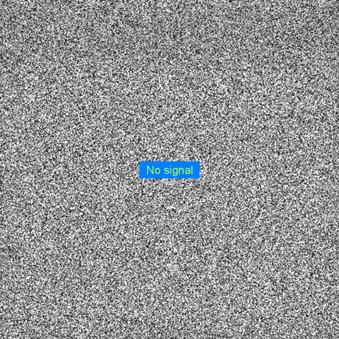
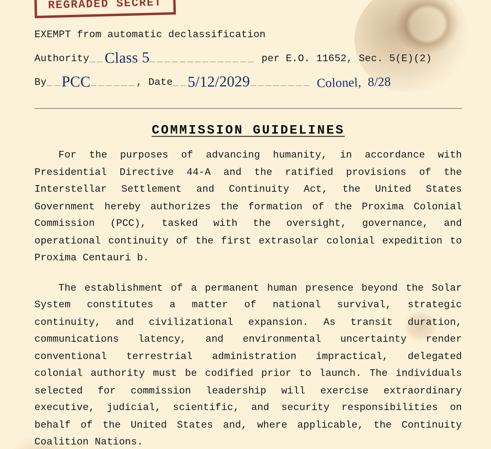

Sidney: Argh! Connection's spotty here. We've had issues since day one with these cameras.
Commish: Just try to patch it in.
Sidney: All the error logs are in Korean…
배선 연결에 문제가 있습니다. 설치 지원을 위해 에 문의하시기 바랍니다.
Cam: I'm sure Cosmo is fine. He's smarter than the other subjects on-board. He can figure out first contact with another sentient species. He already did the same with us humans.
오류: 보안 장치를 임의로 조작하지 마십시오. 서비스 이용 약관을 위반하는 행위입니다.
Commish: Why do you have so much trust in this squirrel? It's infuriated me since the beginning how you prance over protocols and sequester yourself to speak with this wild animal alone!
Cam: He's not just a wild animal, Commish.
Commish: Yes, he is! Even he can't follow simple instructions and get in his pod. Since you've already broken the rules and told him his purpose, he should've known by now how sacred it is for the survival of not just humanity; but his species too!
Cam: If you were barreling at a quarter of the speed of light and all alone in that darkness, you'd want a friend too!
Cam: You're right, he's not human. He's something else entirely now. He doesn't even feel a connection to his parents or his fellow squirrels anymore. I can't even begin to imagine how that must feel in Cosmo's head.
Commish: These animals frustrate me.
Cam: Now I understand why Lalo went berserk. He was treated like a lab rat. Forced to conform to humanity's aspirations of an intelligent animal.
오류: 보안 장치를 임의로 조작하지 마십시오. 서비스 이용 약관을 위반하는 행위입니다.
Commish: And you think all this grandstanding will get us closer to our goal? Laika is still a celebrated astronaut across the globe. The job must be done, whether feelings are involved or not.
Cam: …
Sidney: Oh! The audio is working now!
Commish: While it runs, work on restoring the camera. Now!
Sidney: You got it, boss.
Cosmo: Hello, buddy. Wake up! It's been fifteen minutes now.
Cosmo: I'm starting to wonder if you expired by the way you smell.
Cosmo: Like a dead fish. Or maybe you pooped yourself.
Commish: Oh, thank god! The raccoon's still not awake. Can we get any ID on the raccoon? Wild? Personal pet? I don't remember it being catalogued.
Cam: I'll check the archives and group forums. Maybe it was snuck on board.
Cam: …
Cam: I'm only getting one hit. Apparently it was a pet of one of the technicians. Fully authorized by the signing board.
Commish: Oops. Well, it's not dangerous, right?
Cam: Group logs say he was a rescue by the technician when he was back home in Oregon. No logs mentioning friction with the crew. But that leaves the question-.
Commish: Why the hell is it with the Captain?
Sidney: Maybe the tech was good friends with the Captain.
Cam: Or he had no idea.
Commish: The Captain must've known. Protocol states crewmembers must survey their cryogenic pod and surroundings to avoid a court-marshal. It's very definite in the Commission's Guidelines!

Sidney: Well someone's not around to fulfill that court mashal.
Commish: Stop.
Cosmo: *Chitter*
Cam: Sounds like more audio activity. Though that sounds like depressed Cosmo chittering.
Commish: Let's hope that thing doesn't wake up. Pray with all your heart. The fate of humanity rests once again on the good contact of a squirrel and a wild raccoon.
오류: 보안 장치를 임의로 조작하지 마십시오. 서비스 이용 약관을 위반하는 행위입니다.
Sidney: No. No. No! I've been locked out! It'll take a whole weekend if you want me to crack this now.
Commish: That's way too long, this squirrel needs instructions now. A day too long and the ship might barrel into another asteroid.
Sidney: …
Sidney: Ugh. I know someone.
Cam: Know someone? Like someone that can fix this?
Sidney: She's pure brains. She's in another department but…
Commish: We'll fast-track her clearance. Anything to get this off without a hitch.
Sidney: Oh, merde.
Cam: What's up?
Sidney: I… You know what? You'll see. It'll all make sense soon.
Commish: Log end.